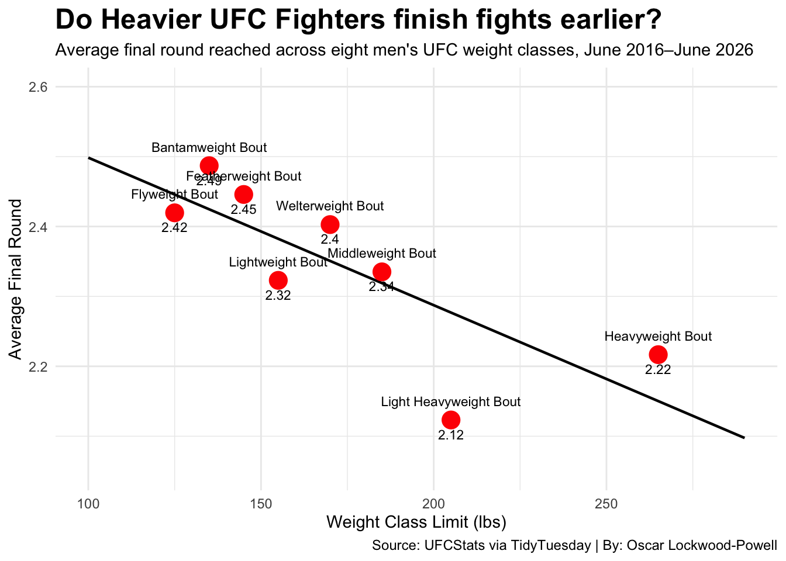

Analyzing UFC knockout rates, fight times and outcomes across weight classses from 2016-2026
Author
Oscar Lockwood-Powell
Published
November 13, 2026
Does a fighter’s weight class lead to more knockouts in the UFC?
In the UFC, heavier fighters are usually depicted with higher power and less endurance, while lighter fighters are more known for their speed and agility. Does this differnce really show up within fight results?
This project goes over fights from 2016-2026, comparing the difference in fight outcomes, time and knockout rates between different weight classes. The goal is to find out if a heavier weight class is associated with more knockouts in the octagon within the last decade.
To start off, we will look at the percentage of fights that ends in a KO/TKO finish in each weight class. This is gonna give us a good baseline when determining which division produces the most knockouts.
Code
weight_table <- ufc_project |>group_by(weight_class) |>summarise(total_fights =n(),knockouts =sum(method =="KO/TKO", na.rm =TRUE) ) |>mutate(ko_percentage =round(knockouts / total_fights *100, 1) ) |>arrange(desc(ko_percentage))weight_table |>gt() |>cols_label(weight_class ="Weight Class",total_fights ="Total Fights",knockouts ="KO/TKO Finishes",ko_percentage ="KO/TKO Rate (%)" ) |>tab_header(title ="Which UFC Weight Class has highest Knockout Rate?",subtitle ="KO/TKO Across all mens UFC weight classes from June 2016 - June 2026" ) |>tab_source_note(source_note =md("**Source:** UFCStats via TidyTuesday | **By:** Oscar Lockwood-Powell") ) |>opt_table_lines("none") |>tab_style(style =list(cell_fill(color ="red"),cell_text(color ="white") ),locations =cells_body(rows = ko_percentage ==max(ko_percentage) ) ) |>tab_options(heading.title.font.size =px(18),heading.subtitle.font.size =px(11),heading.title.font.weight ="bold" )
Which UFC Weight Class has highest Knockout Rate?
KO/TKO Across all mens UFC weight classes from June 2016 - June 2026
Weight Class
Total Fights
KO/TKO Finishes
KO/TKO Rate (%)
Light Heavyweight Bout
357
162
45.4
Heavyweight Bout
360
156
43.3
Middleweight Bout
558
211
37.8
Lightweight Bout
675
227
33.6
Welterweight Bout
653
217
33.2
Featherweight Bout
563
164
29.1
Bantamweight Bout
540
138
25.6
Flyweight Bout
286
67
23.4
Source: UFCStats via TidyTuesday | By: Oscar Lockwood-Powell
The first table shows that light heavyweight fighters actually produce the most knockouts at a rate of 45.4%, directly followed by heavyweight fighters with a knockout rate of 43.3%. Looking at the lower end of the table, flyweight comes in with a knockout rate of 23.4%, marking a 22 percent differnce between the highest and lowest, suggesting that heavier fighters are more likely to produce knockouts.
While knockout rates show which class produces the most finishes, they don’t tell the story of how quickly those fights conclude. After first looking at how a fight outcome differs across UFC weight classes, the next step is to see how long those fights last. This scatter plot goes into comparisons of eight UFC men’s weight classes with the average final time reached in fights lasting from 2016-2026. The goal is to see whether heavier UFC fighters finish fights faster than lighter fighters.
Code
ggplot(round_data, aes(x = weight_limit, y = avg_round)) +geom_smooth(method ="lm", se =FALSE, fullrange =TRUE, color ="black", linewidth =0.8) +geom_point(color ="red", size =5) +geom_text(aes(label = weight_class),hjust =0.5,vjust =-1.5,size =3 ) +labs(title ="Do Heavier UFC Fighters finish fights earlier?",subtitle ="Average final round reached across eight men's UFC weight classes, June 2016–June 2026",x ="Weight Class Limit (lbs)",y ="Average Final Round",caption ="Source: UFCStats via TidyTuesday | By: Oscar Lockwood-Powell" ) +expand_limits(x =c(100, 290),y =c(2.05, 2.60) ) +theme_minimal() +theme(plot.title =element_text(size =18, face ="bold"),plot.subtitle =element_text(size =11),plot.caption =element_text(size =9))

This scatterplot shows a downward trend throughout the weight classes, showing that heavier UFC fighters generally tend to finish fights faster than lighter fighters. The lighter weight classes such as bantamweight and featherweight have a more consistent chance of making it to later rounds, while light heavyweight and heavweight fights tend to end sooner.
Although there is a big difference between all of the divisions, the trend shows an overall case of a fighters weight playing a bigger role in a fight result. This further supports the idea that heavier fighters are more likely to end fights earlier.
Overall, this data shows that although heavier fighters are producing more higher level knockouts, lighter fighters have started to close that gap over the last decade. Featherweight is a prime example of this, seeing the highest jump going from 24.6 to 32.5% KO/TKO rate within the last 10 years. Lightweight and Flyweight fighters also saw an increase in knockout rates throughout the last 10 years, while heavyweight saw a decrease in knockouts as well as light heavyweight only increasing by 1.8%. This shows that even tho heavier weight classes are associated with more knockouts, ligher fighters are becoming more competitive in this category.
Ultimately the relationship of heavyweight fighters and knockouts still stays strong to this day. However, lighter fighters are starting to heavily compete in this category, turning the tide of this stereotype.